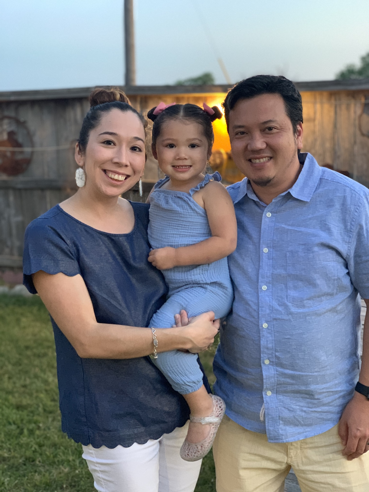

My name is Keita Suzuki. Coding is completely new to me, but I am enjoying so far.
I've been working in hospitality indusrty for my career but with this pandemic happeninig, unfortunately, I had make a career shift.
The classes have been informative, and fast pace, but I'm enjoying.
Classmates have been very supportive and as our instructor Jeremy says, "Practice, practice practice!"
That's the key to be successful!
I like to play soccer on my free time, but I have not able to play for a while. Hopefully, it will be safe enough to play soon.
I'm a huge Liverpool FC supporter. They won the Barkley's Premier League title this season!
It is very exciting news for me and my family! I love watching my daughter growing up. She is constatnly learning and her imagination is unimaginable!
Please check out my portfolio for my family photos.